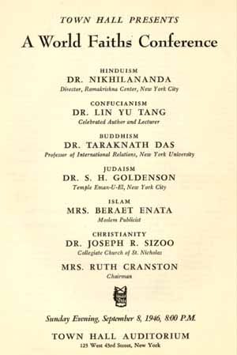
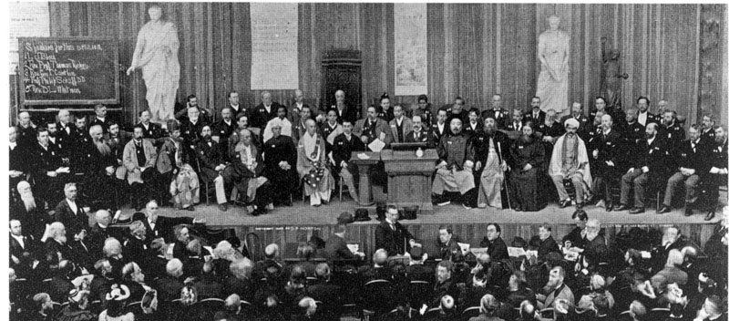
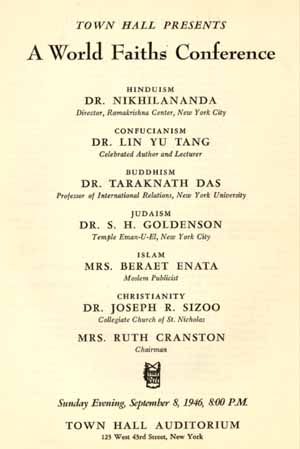
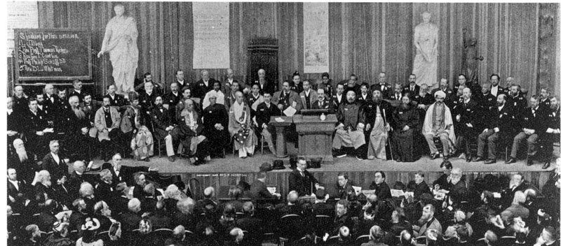
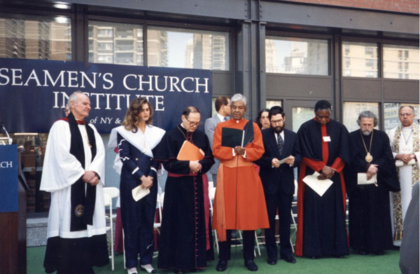
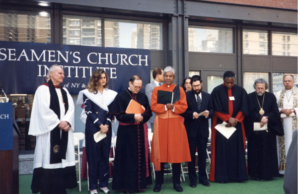

Ramakrishna-Vivekenanda Center of New York
Image Gallery
Centenary Celebration of Swami Vivekananda in America and the World's Parliament of Religions
November 5-7, 1993
 





 



The Ramakrishna Order and its Centers are at the forefront of the interfaith movement. Swami Adiswarananda regularly participates in the programs and activities of major interfaith organizations. He is a member of the advisory board of The Temple of Understanding, and has spoken at a number of its Spiritual Summit Conferences. He is a founding member of the Global Forum of Spiritual and Parliamentary Leaders for Human Survival and also serves on the International board of advisors of the International Peace University of Potsdam and Berlin, Germany. In the summer of 1993, Swami Adiswarananda took part in the Parliament of the World's Religions, which was held in Chicago to commemorate the Centenary of the first Parliament of 1893 and was selected to be one of the 200 representatives in the Parliament's Assembly of Religious and Spiritual Leaders. The Assembly held sessions during the days of the Parliament and continues as a consultative body to discuss issues and challenges facing the global community and to seek common grounds for mutual understanding and cooperation among all faiths.
An impressive event was organized by Swami Adiswarananda on January 4, 1987 to commemorate the 150th Birthday of Sri Ramakrishna and the 100th Anniversary of the Ramakrishna Order. As Many Faiths, So Many Paths, an interfaith celebration, was held at the Community Church of New York. Among the many distinguished personalities participating in the event were Assistant Secretary General of the United Nations James Jonah, senior Swamis of the Order in America, religious leaders of different faiths, scholars, and noted musical artists. More than one thousand devotees and friends of the Center attended the event and on the following day The New York Times, published a photograph of the celebration.